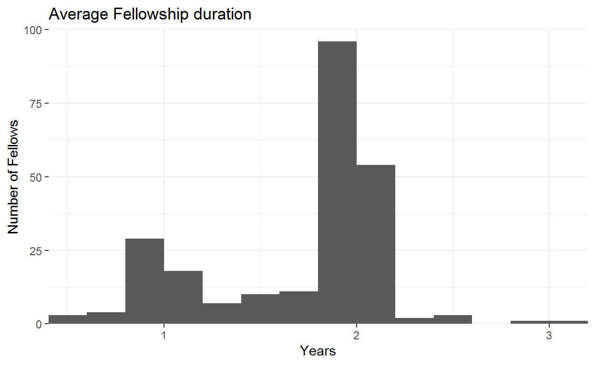

An analysis of the data
In part 1 of this series I examined the backgrounds of ODI Fellows prior to the start of their Fellowships. In this post I examine what happens after.
Yes, some Fellowships end early, but not many. I examined this issue using two datasets.
I first used the Fellowship handbooks. Individuals should appear in two handbooks, once for their first year and once again for their second. If they fail to make an appearance a second time round they left within the first year or so. I estimate an attrition rate of about 9% using this method.
This suggests that the attrition rate is very low, a quick google suggests 10% annually is considered good. Indeed, the company I currently work for has annual attrition rate of about 9%.
The second is LinkedIn data. The histogram below shows the average amount of time an individual reported being on their Fellowship. The graph only includes an individual’s first Fellowship as in some rare cases a Fellowship ends early and ODI posts them somewhere else. The average Fellowship lasts 1.7 years.

The vast majority (95%) report working rather than re-entering education directly after their Fellowships. Very few go on to do a PHD directly after. Of those Fellows that finished their Fellowship, 11% report starting a PHD. This estimate is likely the low-end. My dataset only included individuals from the 2011 to 2018 cohorts. Those that haven’t finished or only recently finished may have had less of an opportunity to start a PHD. The graph below provides some evidence of this where very few of those in 2016 cohort (finishing in 2018) had started a PHD.
A substantial minority (22%) report remaining in the same place as their Fellowship in their job immediately following. ODI Fellows continuing to work in the country of posting is might be considered a success by the scheme. Not only does it indicate that ODI Fellows want to stay but that they have found some organisation willing to pay their salary. This suggests they picked up some worthwhile knowledge and skills during their Fellowship.
The map below shows where ex-Fellows were immediately following their Fellowship. A similar map in my previous blog post, looking at where Fellows were immediately prior, had a strong UK focus. Much less so here.
An interesting question I wanted to answer was whether Fellows transitioned into ‘development’ careers. I did not. I ended up working in the UK Government (and not at DFID) directly after my Fellowship. Nonetheless, many other Fellows I know did end up having development careers.
This was a difficult question to answer with the data. Either I had to strictly define ‘development jobs’ in some formal way (so a computer can do the classification) or do some manual analysis. I couldn’t think of a way of adequately defining ‘development’ jobs so I settled on manual analysis. To ensure the task was achievable I only looked at jobs immediately following Fellowships. The assumption is if you did a Fellowship, then got a job in ‘development’ you then stayed in the field. Though I know this isn’t true for some ex-Fellows.
The answer the data provides is an overwhelming yes. Of those Fellows that did not enter education following their Fellowship 74% reported working in development. This includes working in the international public sector (World Bank, UN etc.), a government development department (DFID, GIZ etc.) or a private consultancy (Adam Smith International, OPM etc.).
A number of organisations stood out as taking a lot of Fellows immediately after their Fellowships. There were 85 organisations in total with the majority only having employed 1 Fellow in their first post-Fellowship role. Those organisations that stood out were the World Bank (14% of Fellows), Oxford Policy Management (6%), UN agencies (6%), International Growth Centre (6%) and DFID (4%).
Given the data I thought I would try to describe a ‘typical’ Fellow. Picking the most popular categories for each area I analysed:
While the above attempts to describe a ‘typical’ Fellow it isn’t very accurate. You don’t need to fit this profile to get a Fellowship nor is there a guarantee you will have a development career after. I only marginally fit the above profile. Nonetheless, I feel the above description will resonate with many ex-Fellows.
If you have any thoughts or questions don’t hesitate to get in touch, you can find my details in the about page.